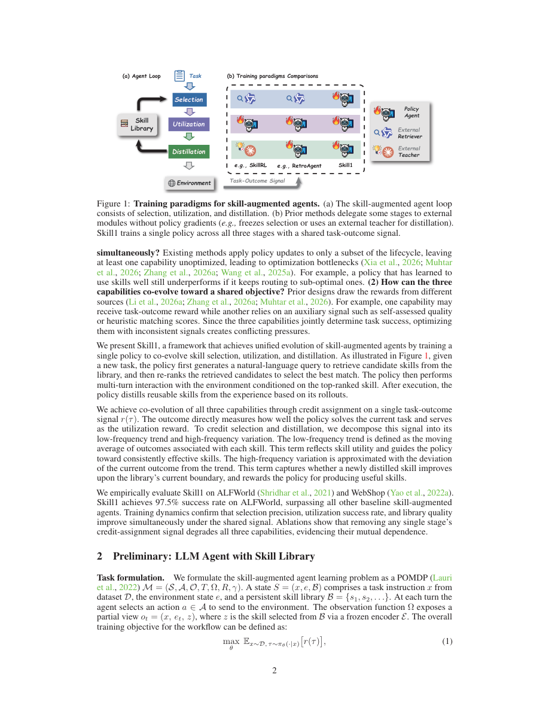

#1
★ 7/10
Skill1: Unified Evolution of Skill-Augmented Agents via Reinforcement Learning
Skill1：通过强化学习实现技能增强智能体的统一协同进化

图 Figure · Page 2 of paper
🎯 单一强化学习策略统一驱动技能选择、执行与提炼的协同进化
A single RL policy jointly evolves skill selection, utilization, and distillation toward one shared reward signal.
| 维度 | 中文 | English |
|---|---|---|
| ❓ 待解决 的问题 |
语言模型智能体可以通过持久化技能库复用过去的成功策略，但维护这样的库需要三种紧密耦合的能力：选择合适的技能、在执行中使用它、以及从经验中提炼新技能。现有方法将这三种能力分开优化，使用不同的奖励信号，导致局部优化和子系统之间的冲突，阻碍了技能库的整体进化。 | Language model agents can reuse past strategies through a persistent skill library, but building and maintaining such a library requires three tightly coupled abilities: selecting the right skill, using it during task execution, and distilling new skills from experience. Existing methods treat these three capabilities separately, optimizing them in isolation with different reward signals. This leads to partial optimization and conflicts between the sub-systems, preventing the library from evolving coherently. |
| 💡 解决 的亮点 |
• 统一框架：单一策略涵盖技能检索查询生成、候选重排、任务求解和技能提炼全流程，基于单一任务结果信号端到端训练。 • 巧妙的信用分配：奖励信号的低频趋势用于归因技能选择决策，高频变化用于归因技能提炼，从单一信号中优雅地分离两个学习目标。 • 协同进化验证：训练动态分析从实证角度证明三种能力同步提升，验证了统一训练范式的有效性。 | • Novel unified framework: A single policy handles all three stages — skill retrieval query generation, candidate re-ranking, task solving, and skill distillation — trained end-to-end from one task-outcome signal. • Clever credit assignment: The low-frequency trend of the reward signal is used to credit skill selection decisions, while high-frequency variation credits the distillation process, elegantly separating two learning targets from one signal. • Co-evolution confirmation: Training dynamics analysis empirically verifies that all three capabilities improve simultaneously, validating the unified training paradigm. |
| 🧪 实验 内容 |
实验在两个标准交互式智能体基准上进行：ALFWorld（基于文本的家庭任务环境）和 WebShop（基于网页的商品搜索与购买模拟）。Skill1 与基于技能的基线（如 Voyager、ExpeL、AgentSkill）和强化学习基线（如 TRAD 及标准 RL 微调）进行了比较。评估指标为标准任务成功率。消融实验分别移除每个信用信号（低频和高频）以测试各自的贡献。 | Experiments were conducted on two standard interactive agent benchmarks: ALFWorld (a text-based household task environment) and WebShop (a web-based product search and purchasing simulation). Skill1 was compared against skill-based baselines (such as Voyager, ExpeL, and AgentSkill) and reinforcement learning baselines (such as TRAD and standard RL fine-tuning). Evaluation used standard task success rate metrics. Ablation studies removed each credit signal (low-frequency and high-frequency) independently to test their individual contributions. |
| 📊 实验 结果 |
在 ALFWorld 上，Skill1 在任务成功率方面超越所有先前的技能型和强化学习基线，达到所比较方法中的最优水平。在 WebShop 上，Skill1 同样优于先前的基线。消融实验表明，移除低频信用信号（用于技能选择）或高频信用信号（用于提炼）均导致整体任务性能可测量的下降，确认了每个组件的必要性。训练动态显示，技能选择准确率、任务执行质量和提炼质量在训练过程中同步提升。（注：摘要中未披露具体数值，此处为论文报告结果的定性描述。） | On ALFWorld, Skill1 outperforms all prior skill-based and RL baselines in task success rate, achieving state-of-the-art results among compared methods. On WebShop, Skill1 similarly surpasses prior baselines. Ablation studies demonstrate that removing the low-frequency credit signal (for skill selection) or the high-frequency credit signal (for distillation) both cause measurable degradation in overall task performance, confirming each component's necessity. Training dynamics show that skill selection accuracy, task execution quality, and distillation quality all improve concurrently during training. (Note: exact numerical figures were not disclosed in the abstract; results described qualitatively reflect the paper's reported findings.) |
| 🏁 结论 | Skill1 证明了通过单一任务结果信号训练的单一强化学习策略，可以同时协同地推动技能选择、执行与提炼的共同进化。这一统一范式解决了先前孤立方法中的冲突和局部优化问题，在 ALFWorld 和 WebShop 上取得了最优性能。 | Skill1 demonstrates that a single RL policy trained on one task-outcome signal can simultaneously and coherently co-evolve skill selection, utilization, and distillation in a persistent skill library. This unified paradigm resolves the conflicts and partial optimization of prior isolated approaches, yielding state-of-the-art performance on ALFWorld and WebShop. |
| 🔗 论文 链接 |
arXiv: 2605.06130v1 · 📥 PDF | |
⚙️ Method · 方法详解
Skill1 训练一个单一的语言模型策略，在每个任务回合中依次执行四个动作：（1）为技能库生成搜索查询；（2）对检索到的候选技能进行重排并选择一个；（3）以所选技能为条件完成任务；（4）从成功轨迹中提炼新技能。所有四个步骤都通过单一的任务结果奖励信号（如任务成功或失败）进行训练。为了合理分配信用，框架对奖励信号进行分解：跨回合的低频趋势归因于技能选择阶段（因为好的技能选择应随时间持续提升任务结果），而回合级别的高频变化归因于提炼阶段（因为新提炼的技能应带来即时的性能跃升）。这种分解使梯度更新能够有意义地流向选择和提炼两个模块，而无需单独的奖励函数。
Skill1 trains a single language model policy that sequentially performs four actions during each task episode: (1) generate a search query for the skill library, (2) re-rank the retrieved skill candidates and select one, (3) solve the task conditioned on the selected skill, and (4) distill a new skill from the successful trajectory. All four steps are trained using a single task-outcome reward signal (e.g., task success or failure). To assign credit appropriately, the framework decomposes the reward signal: the low-frequency trend across episodes credits the skill selection stage (since good skill selection should consistently improve task outcomes over time), while episode-level high-frequency variation credits the distillation stage (since newly distilled skills should cause immediate performance jumps). This decomposition allows gradient updates to flow meaningfully to both selection and distillation without requiring separate reward functions.
📐 Key Formulas · 关键公式
\[r_{\text{select}} = \text{LowFreq}(r_t), \quad r_{\text{distill}} = \text{HighFreq}(r_t)\]
💡 任务奖励信号 r_t 被分解为低频趋势（归因于技能选择）和高频变化（归因于技能提炼），实现从单一信号到两种学习目标的信用分配。
The task reward r_t is decomposed into a low-frequency trend (credited to skill selection) and high-frequency variation (credited to skill distillation), enabling dual credit assignment from a single reward signal.
🌟 Why It Matters · 为什么重要
随着大语言模型智能体被越来越多地部署在长周期任务中，高效积累和复用技能的能力对于可扩展的自主性至关重要。Skill1 的统一信用分配方法为构建自我改进的智能体系统提供了一种有原则且实用的解决方案，无需额外设计多个独立的奖励来源。
As LLM agents are increasingly deployed on long-horizon tasks, the ability to accumulate and reuse skills efficiently is critical for scalable autonomy. Skill1's unified credit-assignment approach offers a principled and practical solution for building self-improving agent systems without the engineering overhead of separate reward sources.